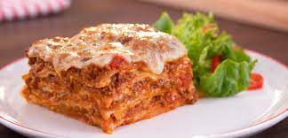

Sua Receita

Ingredientes:
Molho de Carne:
- 500g de carne moída
- 1 cebola picada
- 2 dentes de alho picados
- 1 lata de tomate pelado (ou cerca de 400g de tomates frescos)
- 1 colher de sopa de azeite de oliva
- 1 colher de chá de orégano
- 1 colher de chá de manjericão seco
- Sal e pimenta a gosto
Molho Bechamel:
- 50g de manteiga
- 50g de farinha de trigo
- 500ml de leite
- Noz-moscada ralada a gosto
- Sal e pimenta a gosto
Montagem da Lasanha:
- 250g de massa para lasanha pré-cozida
- 200g de queijo muçarela ralado
- 100g de queijo parmesão ralado
Instruções:
- Preparação dos Ingredientes
- Preparação do Molho de Carne
- Em uma panela grande, aqueça o azeite de oliva em fogo médio.
- Refogue a cebola e o alho até ficarem dourados.
- Adicione a carne moída e cozinhe até que esteja bem dourada e não haja mais rosa.
- Acrescente os tomates pelados (ou tomates frescos picados), orégano, manjericão, sal e pimenta ao molho de carne.
- Cozinhe em fogo médio por cerca de 20-30 minutos, mexendo ocasionalmente. Reserve.
- Preparação do Molho Bechamel
- Em uma panela média, derreta a manteiga em fogo médio.
- Acrescente a farinha e mexa bem, cozinhando por cerca de 2 minutos até que a mistura fique dourada.
- Gradualmente adicione o leite, mexendo constantemente para evitar a formação de grumos.
- Continue cozinhando e mexendo até que o molho engrosse.
- Tempere com noz-moscada, sal e pimenta a gosto.
- Montagem da Lasanha
- Pré-aqueça o forno a 180°C.
- Em uma travessa de forno, coloque uma camada fina de molho de carne no fundo.
- Em seguida, faça uma camada de massa para lasanha pré-cozida.
- Adicione uma camada de molho bechamel e uma camada de queijo muçarela ralado.
- Repita o processo, alternando camadas, até que todos os ingredientes estejam usados.
- Finalize com uma camada de queijo parmesão ralado por cima da lasanha.
- Cozimento e Servir
- Cubra a travessa com papel alumínio e leve ao forno pré-aquecido por cerca de 30 minutos.
- Depois, remova o papel alumínio e asse por mais 10-15 minutos, ou até que a lasanha esteja dourada e borbulhante.
- Retire do forno e deixe descansar por alguns minutos antes de servir.